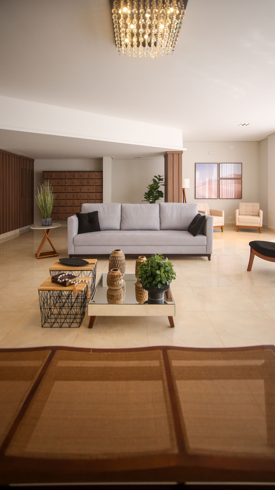
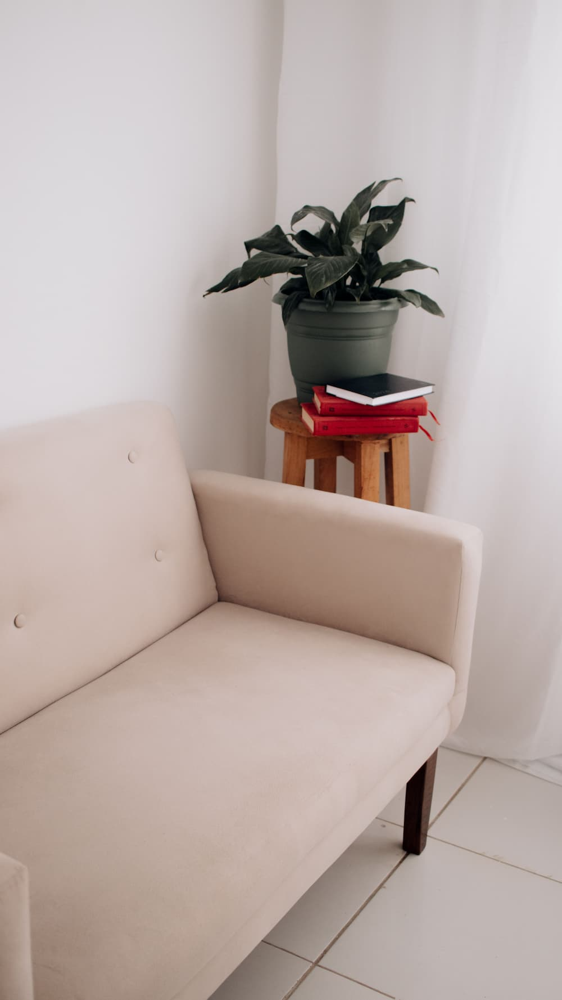
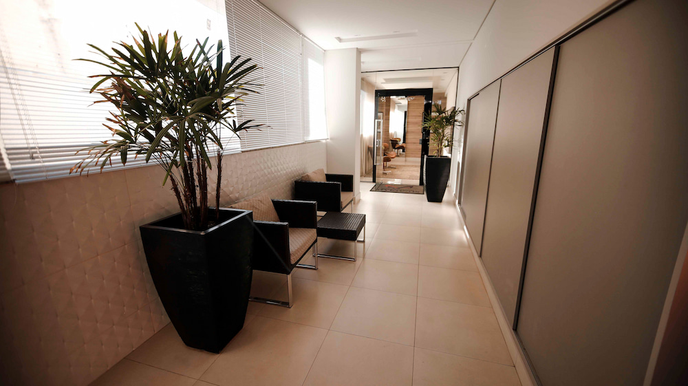

Ansiedade
Acompanhamento para compreender gatilhos, gerenciar a sobrecarga de pensamentos e resgatar o equilíbrio no dia a dia.
CRP: 00-000000 · Psicóloga formada pela Universidade X
Agendar uma conversa inicialAcompanhamento para compreender gatilhos, gerenciar a sobrecarga de pensamentos e resgatar o equilíbrio no dia a dia.
Espaço seguro de escuta para processar sentimentos de desânimo, ressignificar experiências e reencontrar o bem-estar.
Ferramentas para gerenciar a pressão da rotina, evitar o esgotamento profissional e estabelecer limites saudáveis.
Processamento da dor da perda e transições difíceis, respeitando o seu tempo e o ritmo do seu processo individual.

Psicóloga clínica
Formação: Graduada em Psicologia pela Universidade Federal e pós-graduada em Terapia Cognitivo-Comportamental.
Abordagem: Atuo com uma abordagem humanizada e focada na escuta ativa, oferecendo um espaço seguro e livre de julgamentos para ajudar você a desenvolver o autoconhecimento, inteligência emocional e estratégias para lidar com os desafios diários.
Preencha o formulário ou mande uma mensagem. Sem compromisso e sem pressa.
Um primeiro contato para nos conhecermos e você tirar dúvidas.
Você conta o que está vivendo, no seu ritmo, e juntos definimos o caminho.
As sessões têm duração de 50 minutos e ocorrem de forma online ou presencial. Todo o processo é pautado pelo código de ética da psicologia, garantindo absoluto sigilo e confidencialidade sobre tudo o que for compartilhado.


Não. Você pode agendar uma consulta diretamente, sem a necessidade de um encaminhamento prévio de um médico ou psiquiatra.
Tudo o que é conversado em sessão é estritamente confidencial, protegido pelo Código de Ética Profissional do Psicólogo e pela LGPD.
Sim. O atendimento online é tão eficiente quanto o presencial, utilizando plataformas seguras para garantir a sua privacidade e o conforto do seu espaço.
O pagamento pode ser feito via PIX ou cartão. Para planos de saúde, emitimos recibo para você solicitar o reembolso junto ao seu convênio.
Segunda a sexta, das 9h às 18h
Online e presencial